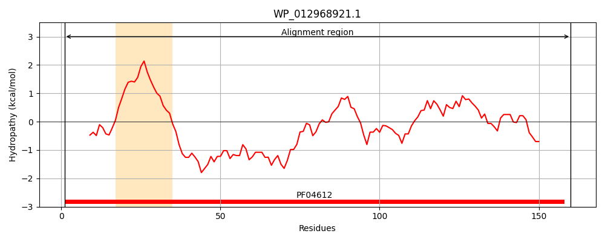
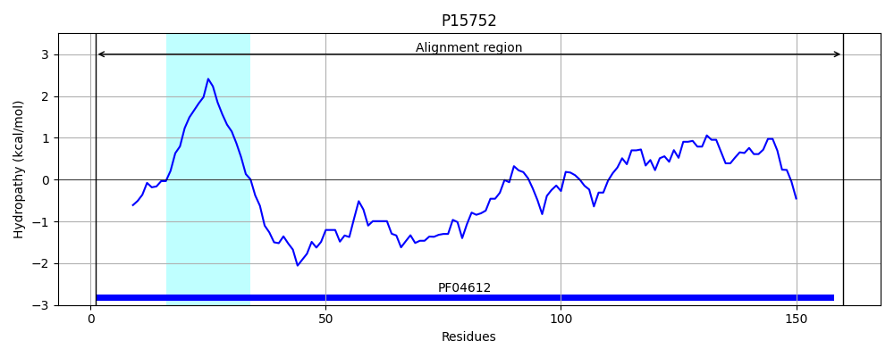
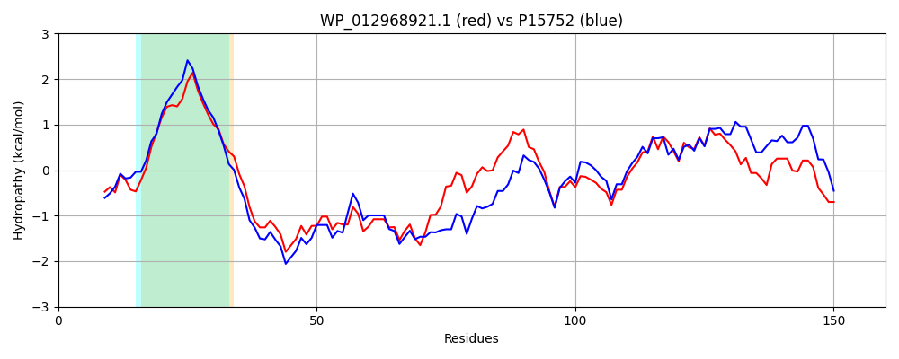

Hit Accession: P15752
Hit TCID: 3.A.15.1.1
Hit Description: gnl|BL_ORD_ID|9187 gnl|TC-DB|P15752|3.A.15.1.1 General secretion pathway protein M (Pullulanase secretion protein pulM) - Klebsiella pneumoniae.
Mach Len: 160
e:0.000000
Query TMS Count : 1
Hit TMS Count: 1
TMS-Overlap Score: 0.900000
Predicted Substrates:CHEBI:36080;protein
BLAST Alignment:
Score: 487 , Bit scores: 192 bits, E-value: 1.2e-63, Alignment length: 160, Percentage identity: 57
Query: 1 MANLLIWWRQRTPSEQRLLLGLAGLLVVCALWYGLWQPWRAREAQWRQTLMKEQASLRWMTQQSPRLQQLSQQPTPTAKEALTALVMREAASHGLAVARLQPQGKRLQVTLQPCTFQALMAWLDAPAMRGVNAVSLSVTGQPSRPGWVMVNHLLLERDDE 160
M NLL W+QRT E+ LLLG+A +L++ ++Y LWQPW+ REAQWRQTL +EQASL+WM QQ+P ++QL Q PTA E + ++MREAA HGL + RLQPQG RL +T+QP FQALMAWLDA G+ +L+VT +PGWV VN L+LER DE
Sbjct: 1 MHNLLALWQQRTRRERCLLLGMAVVLLIGLVYYTLWQPWQNREAQWRQTLAREQASLQWMRQQTPLIRQLRNQKPPTAPEEPSTVIMREAARHGLTIVRLQPQGSRLSLTVQPADFQALMAWLDALGQAGMTTATLAVTAVAQQPGWVTVNTLVLERSDE 160 | Protein Hydropathy Plots: |
|---|
|  |  |
Pairwise Alignment-Hydropathy Plot:
|
|---|
|  |